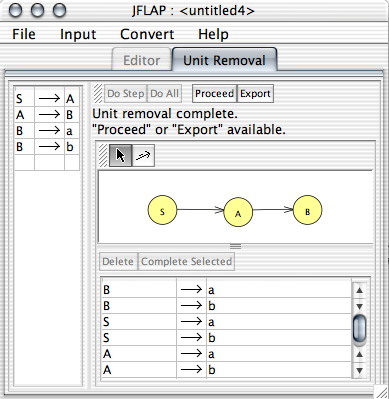
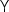
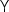

This action is the second of four steps in transforming a grammar to Chomsky normal form. The goal is to reform the grammar so that it generates the same language as the original, but has no unit productions. A unit production is a production with a single variable on the right hand side. This operator consists of two major steps:
The left side of the interface shows the original edu.duke.cs.jflap.grammar. The functionality of the two toolbars (top and middle) shall be covered later. There are two labels between the top toolbar and the variable dependency graph; the first tells which step the user is currently on and the second indicates how much work remains.
The first step is to draw a variable dependency graph (VDG). As you can see, drawing a variable dependency graph uses the same interface for defining an automaton. The regular arrow tool is there for moving variable nodes about, and the transition tool is there to define edges.
The directed graph is defined this way: there is a node for every variable, with the variable name displayed inside the node. The user has the responsibility of defining the edges in the VDG. An edge exists from node A to B in the VDG if and only if there is a unit production A B in the grammar.
B in the grammar.
The goal is to relate how variables are "connected" via unit productions, so that when we remove all unit productions we are able to better tell which relationships we need to preserve. This is discussed more later.
The next step is to reform the edu.duke.cs.jflap.grammar. There are two major parts to this: removing unit productions, and adding new productions to ensure that the grammar accepts the same language.
Note that the interface for grammar editing is exactly the same as the reformation of the grammar with regard to the lambda production removal: we're merely adding and removing different types of productions. Since the interface is identical, it makes no sense to repeat that information.
As far as what rules to add, the idea is that if we have the unit production A B, then to generate the same language after removing that unit production we must add A
B, then to generate the same language after removing that unit production we must add A
 for every B
for every B
 production. (As a special case, note that we do not add unit productions in this substitution, so that if A
production. (As a special case, note that we do not add unit productions in this substitution, so that if A B and B
B and B C are in the grammar, we do not add A
C are in the grammar, we do not add A C.) However, in addition to this, if there are B
C.) However, in addition to this, if there are B C and C
C and C D unit productions, we also add A
D unit productions, we also add A
 and A
and A  for every C
 for every C
 and D
and D .
.
This is where the VDG comes in handy: if A is an ancestor of B in the VDG (even a non-immediate ancestor!), then for every B
 we add A
we add A
 .
.
Note that if we select the unit production A B in the left grammar view, and press "Complete Selected", this will add all A
B in the left grammar view, and press "Complete Selected", this will add all A
 productions for every B
productions for every B
 production currently in the grammar that is not already part of the grammar.
production currently in the grammar that is not already part of the grammar.
Note that in the example given in the figure above, we have the rules B a and B
a and B b, and since both A and S are ancestors of B, both variables now have rules where they directly derive a and b.
b, and since both A and S are ancestors of B, both variables now have rules where they directly derive a and b.
The "Do Step" button will complete the current step only (either defining the edges in the VDG, or reforming the grammar). "Do All" will complete both steps. "Do Selected" is available only when the grammar is being edited; when pressed, any selected unit productions in the grammar editing table will be deleted, and replaced with the appropriate productions. "Proceed" and "Export" are available only when the grammar is completed: "Export" will take this reformed grammar and put it in its own window, while "Proceed" will take the reformed grammar and go to the next phase of the CNF conversion, useless production removal.